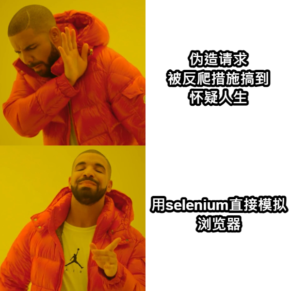
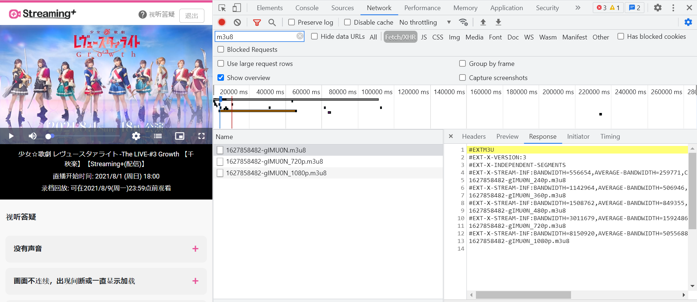
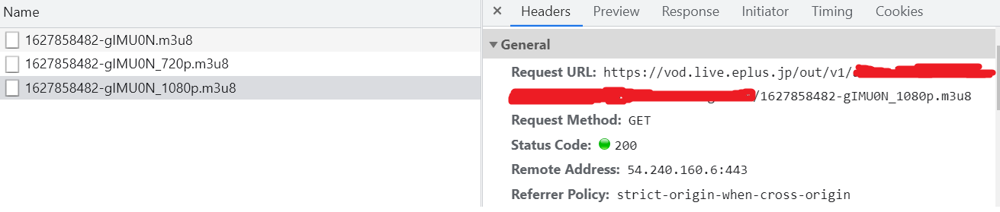

近日看了少歌#3的线上配信，想把留档的视频文件保存下来方便日后再演，奈何家里的宽带实在拉胯，录屏是没可能了，于是只能想办法把视频文件爬下来。
Eplus的反爬措施比较严格，每次建立会话时会生成两个key放在请求的cookie里，另外每隔一段时间会话的key就会失效，因此手动复制cookie的方法也不可行。无力分析混淆js代码的我最终还是选择了笨方法——直接用selenium下载。

在开始下载之前，我们还需要做一些准备工作：
视频作为流媒体 和众多流媒体平台一样，eplus传输视频文件的方式是将整个视频分割成多个小片段，加载视频时不断从服务器下载这些片段文件。片段文件的后缀名为ts，在这里就是一些长度只有几秒的短视频。所有这些片段文件的路径被存储在一个m3u8文件中。因此，我们首先需要找到网站加载视频所使用的m3u8文件：

使用F12开发者工具查看网站发出的网络请求，并筛选出所有m3u8文件，可以看到这里有不止一个文件。查看第一个m3u8文件的内容，发现其记录的是不同清晰度的m3u8文件的路径。为了保存用自然是要下载清晰度最高的1080p，查看下面对1080p的m3u8的请求。由于是get，直接把url复制出来新开个标签页就可以下载了。

保存下来m3u8文件之后可以看到里面存储的ts文件的路径都是相对路径，为了找到下载的url，再在开发者工具中查看对ts文件的请求，把url复制下来即可。
下载ts文件 这一部分比较简单（selenium做了所有复杂的部分），因为eplus回放甚至连登陆都不需要，只需要请求播放url后再挨个get每个ts文件的地址就可以了。不过缺点在于由于eplus不支持同时建立多个连接，因此没法进行多进程下载。另外需要说明的是我下载的时候隔一段时间就会报timeout的错，不知道是网络问题还是反爬虫机制的作用。好在分段传输方式天然地支持了断点续传，因此只需要重启一下就可以了，我们一直以来的努力不会全部木大。
这一部分的代码在下面：
1 2 3 4 5 6 7 8 9 10 11 12 13 14 15 16 17 18 19 20 21 22 23 24 25 26 27 28 29 30 31 32 33 34 35 36 37 38 39 40 41 42 43 44 45 46 47 48 49 50 51 52 53 54 55 56 57 58 59 60 61 62 63 import osfrom selenium import webdriverfrom time import sleepfrom tqdm import tqdmdef parse_m3u8 (filename ): ts_paths = [] with open (filename) as f: for line in f.readlines(): line = line.strip() if line.endswith('.ts' ): ts_paths.append(line) return ts_paths outdir = 'ts_video' if not os.path.exists(outdir): os.mkdir(outdir) ts_paths = parse_m3u8('video.m3u8' ) view_url = 'https://live.eplus.jp/ex/player?ib=xxx' ts_host_url = 'https://vod.live.eplus.jp/out/v1/xxx/' def download_ts (driver:webdriver.Chrome, ts_path ): path = os.path.join(outdir, ts_path) if os.path.exists(path): return False driver.get(ts_host_url+ts_path) return True def main (): options = webdriver.ChromeOptions() prefs = {'profile.default_content_settings.popups' : 0 , 'download.default_directory' : os.path.abspath(outdir)} options.add_experimental_option('prefs' , prefs) options.add_argument('--headless' ) driver = webdriver.Chrome( executable_path='chromedriver.exe' , chrome_options=options) driver.get(view_url) downloading = 0 for path in tqdm(ts_paths): if download_ts(path): downloading += 1 if downloading == 10 : sleep(60 ) downloading = 0 while True : try : main() except Exception as e: print (f'Exception {e} occured, restarting...' ) os.system('del *.crdownload' ) sleep(100 ) else : break
后处理 下载完所有ts文件之后，还需要将其拼接成一整个文件。在Windows下，只需进入下载ts文件的目录（即上面代码中的outdir），并执行命令：
再使用ffmpeg转码为mp4：
1 ffmpeg -i total .ts -vcodec copy -acodec copy total .mp4
即可得到mp4格式的完整视频文件。